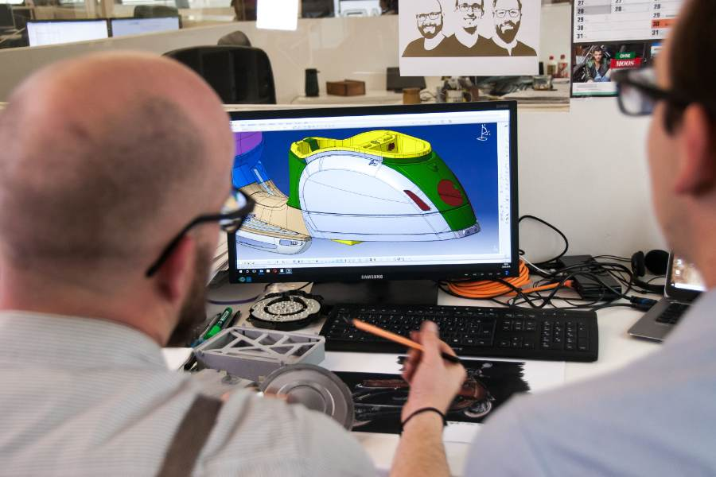
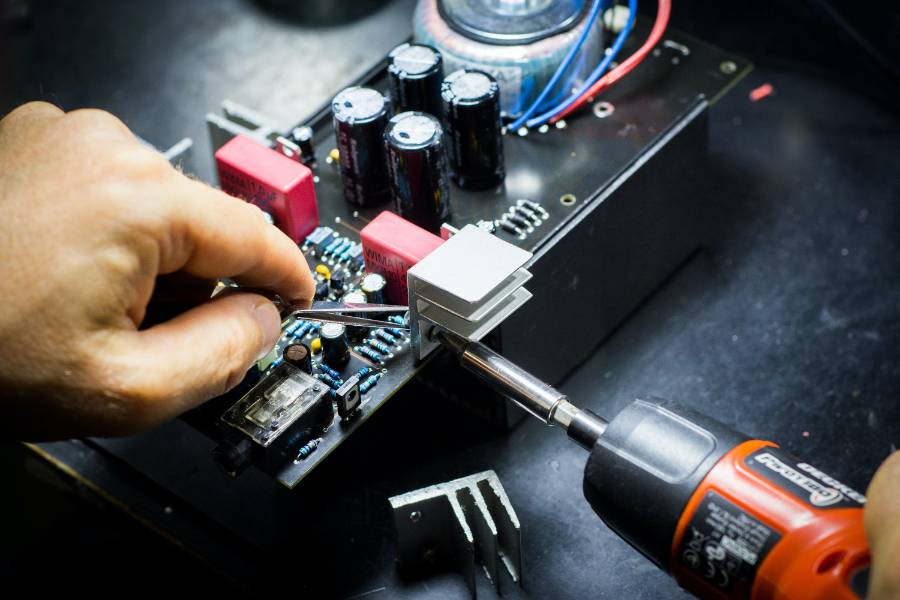
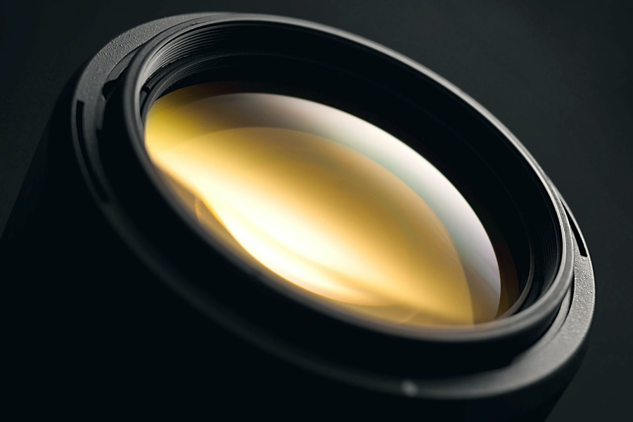
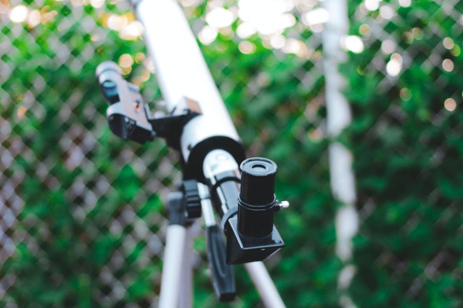
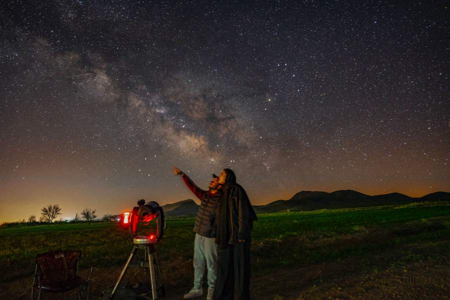

Telescope Diagnostics
Our experienced technicians will carefully assess your telescope's
condition to identify the root of the problem. From faulty optics to
alignment issues, we'll pinpoint the issue swiftly.

Precision Repairs
We take pride in our meticulous repair work. Whether it's a minor
adjustment or a major overhaul, we'll use top-quality parts and
proven techniques to ensure your telescope functions like new.

Optics Cleaning and Alignment
Crisp, clear views are essential for astronomers. We specialize in
cleaning and aligning telescope optics to guarantee optimal
performance.

Accessories and Upgrades
Looking to enhance your telescope's capabilities? We offer a range
of accessories and upgrades, from advanced eyepieces to motorized
mounts, to take your stargazing to the next level.

Fast Turnaround
We understand your passion for astronomy, which is why we aim for
quick turnaround times on all repairs. We'll have your telescope
back in your hands as soon as possible.